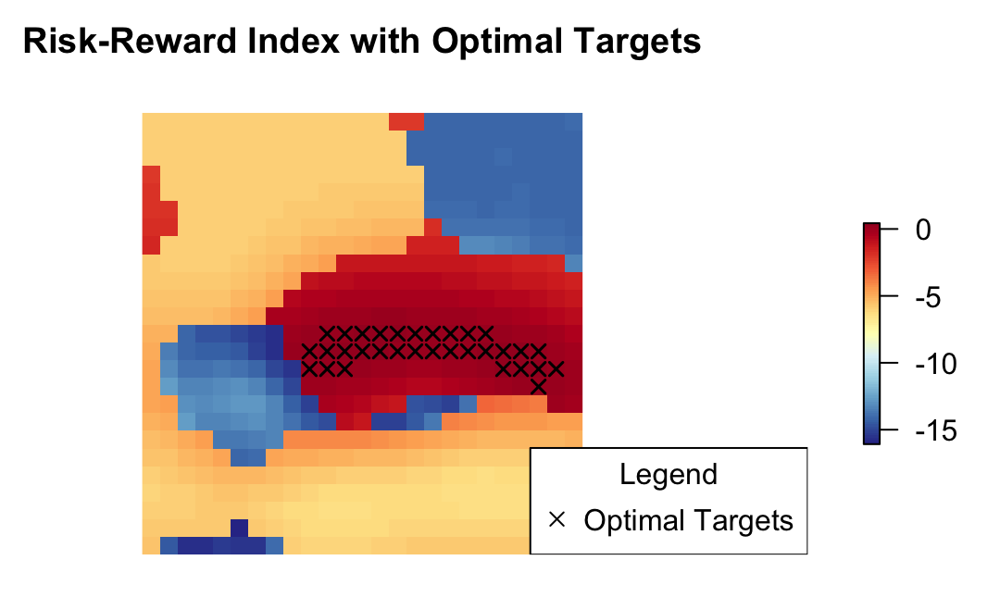

Spatial Process Convolutions
I am currently working on using process convolutions to model a continuous spatial process that is assumed conditional to a categorical process. This is a fundamental assumption in almost any resource estimation problem and why a resource estimator relies on genetic and exploration models to sub domain the spatial domain. Given below is the Bayesian model that is used to fit the weights. With the weights it becomes trivial to fit the process convolution for a particular category.

Figure 1: Conceptual illustration of a process convolution conditioned on a categorical spatial process. The Bayesian approach lends itself well to exploration problems because we can make inference on each location in the spatial domain. For example, here optimal targets are selected using simple calculations from the posterior sampling distribution.
With well chosen kernel and range parameters this class of models can fit a continuous process assumed conditional to a categorical process without requiring that a spatial domain be divided into regions that meet the assumptions of regression based models such as Kriging. Bayesian inference is a natural choice for estimating weights in a stochastic spatial process. It may be the only choice? The posterior for determining the weights is included below and a JAGs model statement is available in the simulation repository. Of note is that the categorical process is assumed known in the entire spatial domain. This is a common assumption and is often handled with such categories as "miscellaneous, unknown, ect" by modelers, however, future work should explore performance with a true error term added to the categorical process.
Model Statement
Likelihood
The likelihood function for a continuous response \(Y_i\) at location \(s_i\), if \(s_i \in R_k\), where \(k\) is a unique region in the spatial domain, is given as:
\[ Y_{k_i} \sim N(\mu_k + Z_{k}(s_i), \tau^{-1}_{\epsilon_k}), \hspace{2cm} i = 1, \dots , n \]
Where:
- \( y_i \): The observed data point for the \(i^{th}\) observation.
- \( \mu_k \): An unknown category-specific mean \(k = 1,2, \dots K\).
- \( \tau_{\epsilon_k} \): The precision of the error term (\(\tau_{\epsilon_k} = \frac{1}{\sigma^2_{\epsilon_k}}\)).
- \( Z_k(s_i) \): The value of the continuous process at \(s_i\) which corresponds to the continuous spatial process convolution for that region when \(s_i\) is in region \(k\).
Priors
- \(\mu_{k=1} \sim \text{normal}(0, \tau_{\mu_{k=1}}^{-1})\)
- For \(k = 2, \dots, K\):
- \(\delta_k \sim \text{exp}(1)\),
- So that \(\mu_k = \mu_{k-1} + \delta_k\) for \(k =2,3, \dots, K\).
- \( w_j \overset{\text{iid}}{\sim} (0, \tau_{w_k}^{-1})\) for \(j = 1, \dots, J\).
- For \(k= 2, \dots, K\):
- \(\hspace{2cm} \tau_{\epsilon_2} \sim \text{gamma}(0.01, 0.01)\)
- \(\hspace{2cm}\vdots\)
- \( \hspace{2cm} \tau_{\epsilon_k} \sim \text{gamma}(0.01, 0.01) \)
- Note: \(\mu_k, \quad \tau_k\) are independent
- ie: \( \tau_k\) has \(\mu = 1, \quad \sigma^2 = 1000\)
Hyper Priors
- \(\tau_w \overset{\mathrm{iid}}{\sim} \text{gamma}(0.001, 0.001)\)
- \(\tau_{\mu_k} \overset{iid}{\sim} \text{gamma}(0.001, 0.001)\)
Posterior
\[ P(\boldsymbol{\mu}, \boldsymbol{Z}, \boldsymbol{W}, \boldsymbol{\tau}_{\epsilon}, \boldsymbol{\tau}_w, \boldsymbol{\tau}_\mu,\mid Y) \propto \\ \underbrace{P(Y \mid \boldsymbol{\mu}, \boldsymbol{Z}, \boldsymbol{\tau}_{\epsilon})}_{\text{Likelihood}} \cdot \underbrace{P(\boldsymbol{\mu})}_{\text{Prior for } \boldsymbol{\mu}} \cdot \underbrace{P(\boldsymbol{Z} \mid \boldsymbol{W})}_{\text{Prior for } \boldsymbol{Z}} \cdot \underbrace{P(\boldsymbol{W} \mid \boldsymbol{\tau}_w)}_{\text{Prior for } \boldsymbol{W}} \\ \cdot \underbrace{P(\boldsymbol{\tau}_{\epsilon})}_{\text{Prior for } \boldsymbol{\tau}_{\epsilon}} \cdot \underbrace{P(\boldsymbol{\tau}_w)}_{\text{Prior for } \boldsymbol{\tau}_w} \cdot \underbrace{P(\boldsymbol{\tau}_\mu)}_{\text{Prior for } \boldsymbol{\tau}_\mu} \]
Regional Targeting
This map shows an application of the process convolution model to a regional scale targeting problem.
Using public domain geochemical data it predicts Cu in soil across the state of Alaska. The model
is fit using a process convolution and given that it uses a Bayesian parameterization we have access to
the full posterior distribution of the model parameters. This allows us to make statistical inference
about the response at each location. For example, the top layer pred_map_optimistic, shows the risk weighted score
for each location. The score is calculated as the amount of exceedance from the posterior mean at each
location above a threshold value. For this layer the threshold is set at the 60\(^{th}\) percentile of the
observed data.
Often when we communicate targets or use them in larger hierarchial models we express
them as a category. The second layer, cats_low_cut expresses these targets based on the probability that
the response is greater than the threshold value. Note how Pebble, Kennecott, Red Dog all present
as Tier 1 assets. Here the categories are defined as follows:
- Tier 1: \( P(\mu(i) \ge \boldsymbol{P}_{60}) = 0.8 \)
- Tier 2: \( P(\mu(i) \ge \boldsymbol{P}_{60}) = 0.6 \)
- Tier 3: \( P(\mu(i) \ge \boldsymbol{P}_{60}) = 0.4 \)
Another layer, pred_map is similar although it uses a higher threshold. The threshold is set for the 75\(^{th}\) percentile of the observed data. This model is more pessimistic and we see that the Pebble region is now mostly background but with one area classified as a Tier 3 asset.